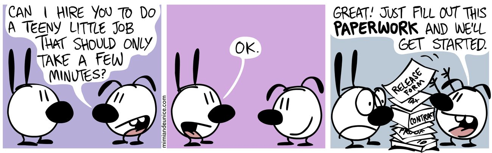

The 60-second small business expense tracker
Most expense tracking dies of ambition. The version that survives fits in sixty seconds a day and still gives tax season everything it wants.
Most expense tracking dies of ambition: twelve categories on day one, abandoned by week three. The version that survives fits in sixty seconds a day and still gives you everything tax season wants.

Why expense trackers get abandoned
Every small business owner starts the same way: a beautiful spreadsheet with categories for everything, monthly summaries, maybe a chart. Day one is glorious. Day nine, there are eleven receipts in a pocket and three subscriptions nobody logged. By month two the sheet is fiction, and by April it's an afternoon of forensic accounting and quiet despair.
The failure isn't discipline. The failure is design: a system whose daily cost is higher than its daily payoff gets dropped, every time, by everyone. So flip the requirement: the tracker must take less than one minute per entry, and produce its value automatically at month end.
The four columns that matter
An expense row needs exactly: date, amount, category, what it was. Four columns. If your sheet has more, every extra column is a place to hesitate, and hesitation is where tracking dies.
The category list is deliberately tiny — eight maximum:
- Software & subscriptions
- Equipment & tools
- Vehicle & travel
- Materials / cost of sales
- Insurance
- Professional fees
- Bank & payment fees
- Other
The tax office doesn't need your categories; it needs business-purpose and proof. Categories exist so you can answer "where is the money going?" — eight buckets answer that question just as well as fifty, and you can actually remember eight.
The 60-second daily loop
Invoices, clients, expenses, quotes and the 12-month forecast — linked and ready for your numbers. One-time price, lifetime updates.
Command Center, $49 → Start free1. Expense happens → log it now: date (today, mostly automatic), amount, category, five-word description. Forty-five seconds.
2. Receipt exists → photograph it immediately into a month-named album. Ten seconds. The paper goes in a shoebox you'll never open; the photo is the real record.
3. Nothing else. No daily totals, no summaries, no "I'll do it properly on Friday." Friday-you has better things to do and worse memory than now-you.
What the month-end view should show you (automatically)

The point of logging isn't the log — it's the three answers that fall out of it:
1. The burn number. Total expenses this month vs. last month, no interpretation needed. A jump you can't explain in one sentence is a conversation your business needs to have with itself.
2. The subscription creep. Software & subscriptions totaled and listed. This category grows silently — $9 here, $14 there — and reading the list straight through is the fastest way to spot something to cancel.
3. The ratio. Expenses as a share of income. Not to judge yourself against some guru's number — your industry has its own physics — but against your own last three months. The trend is the information; the level is just your business's personality.
The tax dimension: prove it later by logging it now
Deductions die in two ways: never recorded, or recorded but unprovable. The 60-second loop kills both — the row records business purpose at the moment it's fresh ("client dinner — Meridian project" beats a $74 restaurant charge in April), and the photo is your proof. At tax time your accountant gets a clean categorized export instead of a shoebox, which also happens to be the difference between a two-hour bill and a two-day bill.
One rule keeps it honest: personal stays out. The mixed-purchase trap (groceries and office supplies on one run) is solved at checkout — split the transaction, two rows, done.
The upgrade path
When the four columns become second nature — usually around month two — the natural extensions are: tying expenses into a cashflow forecast (so this month's burn informs next quarter's tight-month warnings), and tracking expenses per client or job (so you finally know which clients are profitable, not just which pay on time). Both of those live in the Small Business Command Center — and there's a free 12-month cashflow forecaster on the same page if you want the forward-looking half first, at no cost.
Tracking tool, not accounting or tax advice. Works in Excel and Google Sheets.
Invoices, expenses, clients, quotes and a 12-month cashflow forecast — linked in one workbook. One-time price, lifetime updates.
Buy the Command Center — $49 → Start with the free forecaster